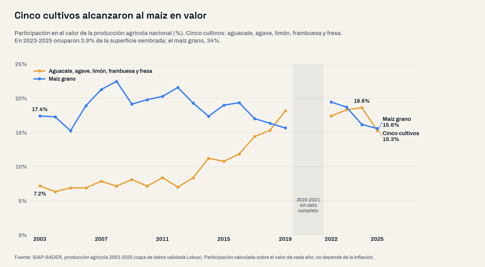
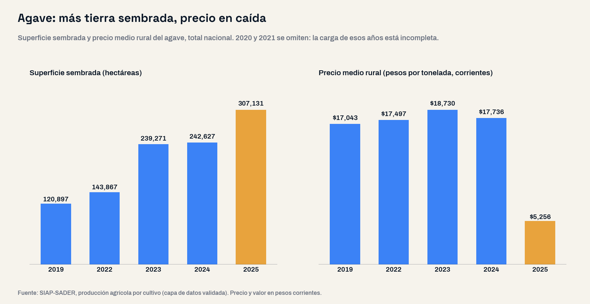

Cinco cultivos en 4% de la tierra ya valen tanto como todo el maíz de México
Aguacate, agave, limón, frambuesa y fresa pasaron de 6.8% a 17.4% del valor agrícola nacional entre 2003-2005 y 2023-2025 ocupando 3.9% de la superficie sembrada; el maíz grano ocupa 34% y aporta 16.8%. La mitad de su expansión cabe en 33 municipios, y el agave muestra el otro lado: +27% de superficie y -70% de precio en 2025.

El panorama: el valor agrícola se mudó de cultivo
La agricultura mexicana generó en 2025 un valor de $812.2 mil millones de pesos corrientes sobre 19.83 millones de hectáreas sembradas, según el SIAP. La pregunta de este análisis fue abierta: ¿qué cultivos ganaron y perdieron tierra y valor en veinte años, y dónde se concentró el cambio? Se ordenó el universo completo —383 cultivos y 2,451 municipios— comparando los promedios de 2003-2005 y 2023-2025, para que un año climático atípico no decida la comparación.
El hallazgo es de concentración. Los cinco cultivos que más participación ganaron en el valor agrícola —aguacate, agave, limón, frambuesa y fresa— pasaron de 6.8% a 17.4% del valor nacional y ocupan 3.9% de la superficie sembrada. El maíz grano, con 34% de la tierra, aporta 16.8%. Año con año, los cinco superaron al maíz en 2019 y en 2024 (18.6% contra 16.2%) y en 2025 quedaron a tres décimas (15.3% contra 15.6%).
La lectura de negocio
El valor agrícola ya no se mide en hectáreas. Cinco cultivos en menos de 800 mil hectáreas mueven tanto valor como el maíz grano en 6.8 millones. Para quien abastece, procesa, transporta o financia al campo, la unidad de análisis es el cultivo en el municipio, no el estado.
El mapa de la industria: cuánto vale una hectárea
La diferencia está en lo que genera cada hectárea. En 2023-2025, una hectárea sembrada de frambuesa generó en promedio $1.17 millones de pesos al año; una de fresa, $1.05 millones; una de aguacate, $222 mil; una de maíz grano, $21 mil. El aguacate genera por hectárea diez veces lo que el maíz.
| Cultivo | Superficie sembrada 2023-2025 (ha) | Parte de la superficie nacional | Parte del valor agrícola, 2003-2005 → 2023-2025 | Valor por hectárea sembrada al año |
|---|---|---|---|---|
| Frambuesa | 9,892 | 0.05% | 0.08% → 1.34% | $1,166,932 |
| Fresa | 15,610 | 0.08% | 0.64% → 1.89% | $1,045,331 |
| Aguacate | 265,371 | 1.33% | 3.16% → 6.84% | $222,444 |
| Agave | 263,010 | 1.32% | 1.47% → 4.08% | $133,784 |
| Limón | 227,792 | 1.14% | 1.45% → 3.26% | $123,735 |
| Maíz grano | 6,785,165 | 34.01% | 16.64% → 16.81% | $21,391 |
| Los cinco cultivos juntos | 781,675 | 3.92% | 6.80% → 17.41% | — |
Del otro lado, los granos cedieron 2.82 millones de hectáreas y solo 14 de cada 100 pasaron a los cinco cultivos. Pero menos tierra no significó menos grano en todos los casos: el maíz produce 23.6% más en 16.9% menos superficie, porque su rendimiento pasó de 2.83 a 3.88 toneladas por hectárea cosechada. El sorgo produce 30% menos y el frijol 9% menos: para la cadena de alimento balanceado que usa sorgo, la oferta nacional es hoy 30% menor que hace veinte años.
Cadena de valor: la oferta nueva cabe en 33 municipios
La expansión de los cinco cultivos es territorialmente estrecha: de los 971 municipios donde crecieron, 33 concentran la mitad de las hectáreas nuevas. En aguacate, 14 municipios suman la mitad de la expansión, 11 de ellos en Michoacán —Ario, Salvador Escalante, Tancítaro y Tacámbaro a la cabeza—: el hub que sostiene la cadena que describimos en De Michoacán al Touchdown. En agave bastan 10: Pénjamo, Romita, Manuel Doblado y Abasolo, en Guanajuato; La Barca, Zapotlán del Rey, Poncitlán, Jamay y Ocotlán, en la Ciénega de Jalisco, y Rosario, en Sinaloa. Es la base de abasto de la industria del tequila que analizamos en junio.
A escala estatal, la concentración se convierte en dependencia sectorial: los cinco cultivos generan 62.1% del valor agrícola de Michoacán, 37.1% del de Jalisco y 34.0% del de Baja California, donde la fresa y la frambuesa sumaron 35.7% en 2025. En Guanajuato pasaron de 1.6% a 17.4% en veinte años, sobre todo por el agave.
| Entidad | Los cinco cultivos en el valor agrícola estatal, 2003-2005 | 2023-2025 | Cultivo líder de los cinco en 2025 |
|---|---|---|---|
| Michoacán | 43.5% | 62.1% | Aguacate (42.3%) |
| Jalisco | 15.6% | 37.1% | Aguacate (10.4%) |
| Baja California | 7.8% | 34.0% | Fresa (23.3%) |
| Colima | 34.1% | 31.6% | Limón (27.5%) |
| Guanajuato | 1.6% | 17.4% | Agave (7.5%) |
| Nayarit | 2.5% | 15.7% | Aguacate (5.1%) |
Oportunidades y riesgos: el agave como advertencia
El agave muestra qué pasa cuando la superficie crece en los años de precio alto. Su superficie sembrada nacional pasó de 120,897 hectáreas en 2019 a 242,627 en 2024 y a 307,131 en 2025. En 2025 su precio medio rural cayó de $17,736 a $5,256 por tonelada (-70%) y el valor de su producción, de $43,173 a $15,799 millones de pesos corrientes (-63%). Guanajuato duplicó su superficie en un año —de 53,723 a 108,808 hectáreas— con un precio 79% más bajo.

La lectura depende del eslabón. Para un destilador, es un insumo más barato y una oferta que seguirá llegando: en 2025 se cosecharon 40,975 de las 307,131 hectáreas sembradas, y el resto es producción de los próximos años. Para un productor o para quien financia plantaciones, es el riesgo de un cultivo de alto valor sembrado en el pico de su precio. No es el único precio que se movió en 2025: la frambuesa bajó 30% y el limón 17%, mientras el aguacate subió 3%.
Antes de mover una decisión de abasto o de inversión
Separa volumen de valor. La superficie y las toneladas dicen cuánta oferta viene; el precio medio rural dice cuánto vale en el año. Un cultivo puede ganar hectáreas y perder más de 60% de su valor en doce meses, como mostró el agave en 2025.
Insights para la acción
- Mide la oferta por municipio. 33 municipios concentran la mitad de la expansión de los cinco cultivos; un promedio estatal esconde dónde está el abasto real.
- Agroindustria del agave: la ventana de insumo barato es real, pero la superficie plantada entre 2023 y 2025 seguirá entrando a cosecha; conviene contratar con escenarios de precio, no con el precio del último año.
- Proveedores del campo: la demanda de insumos, empaque y logística se mueve con la superficie. Crece donde crecen los cinco cultivos (la meseta aguacatera de Michoacán, el agave de Guanajuato y la Ciénega) y se contrae donde se retiran los granos: Sinaloa siembra 36% menos que hace veinte años.
- Berries y aguacate: son los cultivos de mayor valor por hectárea, pero dependen de pocos municipios y, en 2025, la frambuesa mostró que también su precio se mueve.
- Cruza con la agroindustria instalada. La producción dice dónde está la materia prima; el estudio de mercado y el conteo de unidades económicas dicen quién ya la procesa y cuánta competencia hay.
Conclusión
En veinte años, el valor del campo mexicano se concentró en cinco cultivos, en menos de 800 mil hectáreas y en un puñado de municipios. Aguacate, agave, limón, frambuesa y fresa ya generan tanto valor como todo el maíz grano con menos de una octava parte de su superficie, y el agave acaba de mostrar el precio de esa concentración. Para quien decide dónde comprar, procesar o invertir en el campo, el mapa útil no es el de las hectáreas: es el del valor por hectárea, cultivo por cultivo y municipio por municipio.
Preguntas frecuentes
¿Qué cultivos generan más valor por hectárea en México?
Entre los cultivos con al menos 5 mil hectáreas sembradas, en 2023-2025 encabezan la frambuesa ($1.17 millones de pesos por hectárea al año), la fresa ($1.05 millones) y el arándano ($837 mil). El aguacate genera $222 mil por hectárea y el maíz grano $21 mil. Valores en pesos corrientes.
¿El maíz sigue siendo el cultivo más valioso de México?
Como cultivo individual, sí: el maíz grano generó $126.5 mil millones de pesos en 2025. Pero aguacate, agave, limón, frambuesa y fresa juntos generaron 15.3% del valor agrícola nacional en 2025, frente a 15.6% del maíz, y lo superaron en 2024.
¿Dónde se concentra la nueva producción de aguacate y agave?
La mitad de las hectáreas nuevas de aguacate entre 2003-2005 y 2023-2025 está en 14 municipios, 11 de ellos en Michoacán. La mitad de las de agave está en 10 municipios de Guanajuato, la Ciénega de Jalisco y Sinaloa, encabezados por Pénjamo y Romita.
¿Qué pasó con el precio del agave en 2025?
Según el SIAP, el precio medio rural del agave bajó de $17,736 a $5,256 por tonelada (-70%) mientras su superficie sembrada subió 27%, hasta 307,131 hectáreas. El valor de su producción cayó 63%.
Análisis basado en la estadística de producción agrícola del SIAP-SADER 2003-2025 por cultivo (niveles nacional, estatal y municipal), consultada en la capa de datos validada de Lokus. Universo completo: los 383 cultivos del catálogo y los 2,451 municipios con registro en alguno de los dos periodos, sin preselección; los totales nacional, estatal y municipal cuadran entre sí. Comparación de promedios trienales 2003-2005 contra 2023-2025. Cinco cultivos = los cinco con mayor aumento de participación en el valor agrícola nacional, ordenando el universo completo. Participación en el valor = valor del cultivo entre el valor agrícola total del mismo año, por lo que no depende de la inflación; precios y valores en pesos corrientes, no deflactados. Valor por hectárea = valor de la producción entre superficie sembrada; en cultivos perennes como agave y aguacate la superficie sembrada incluye plantaciones que aún no producen. Los años 2020 y 2021 están incompletos en la capa de datos y se excluyen de las series. Granos = maíz, frijol, sorgo, trigo, arroz, cebada y avena. Clasificación SCIAN (correspondencia aproximada, el SIAP clasifica por cultivo): 111 Agricultura — 11133 frutales no cítricos y de nueces (aguacate, frambuesa, fresa), 11132 otros cítricos (limón), 11199 otros cultivos (agave), 11115 maíz, 11113 leguminosas (frijol), 11119 otros cereales (sorgo). Fecha de análisis: 18 de septiembre de 2026. Para dimensionar la oferta agrícola, la agroindustria instalada y el mercado de cualquier estado o municipio con datos oficiales integrados, visita lokusdata.com